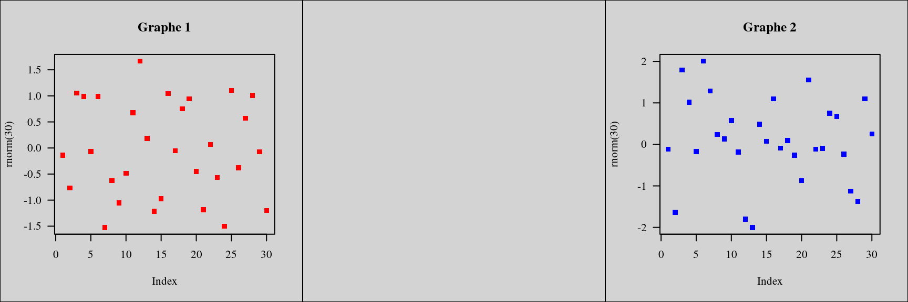
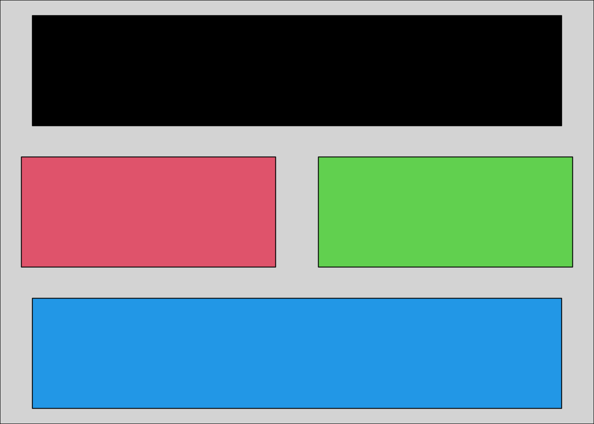
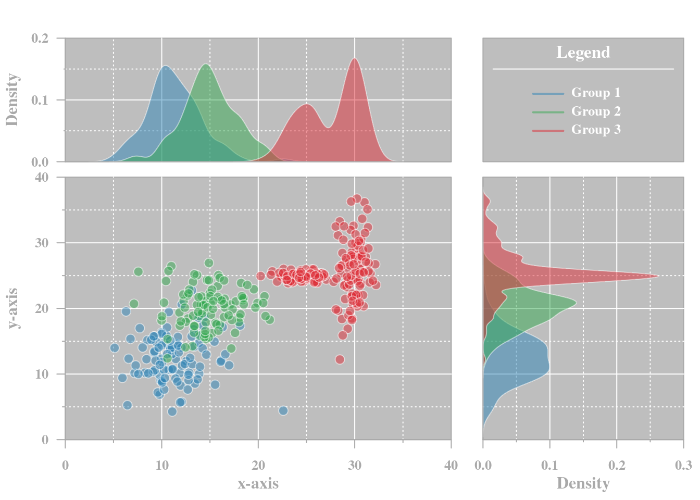

Chapitre9 Partitionnement et composition
Dans ce dernier chapitre, nous allons voir comment créer des compositions
graphiques avancées. Nous allons voir comment partitionner un périphérique
graphique afin d’y inclure plusieurs graphes. Nous avons déjà vu l’argument
mfrow de la fonction par(). Nous en rappellerons rapidement les principes,
mais nous verrons surtout deux autres fonctions (layout() et split.screen())
offrant beaucoup plus de souplesse dans l’arrangement des figures au sein du
périphérique. Finalement, nous verrons comment inclure un graphique dans un
autre graphique, par ex. une inclusion en médaillon. Pour ce faire, nous
discuterons de deux derniers paramètres graphiques contenus dans le par() :
new et fig.
9.1 Partitionnement basique
Nous avons déjà utilisé l’argument mfrow de la fonction par() à de multiples reprises. Cet argument permet de partitionner la fenêtre graphique en différentes régions, chacune destinée à accueillir un graphe différent. Avec mfrow, les régions seront remplies en lignes. Il existe un autre paramètre, mfcol, avec lequel l’ordre de remplissage des régions partitionnées se fera en colonnes. Mais, son principe d’utilisation est le même que mfrow : la première valeur indique le nombre de lignes et la seconde, le nombre de colonnes.
Le partitionnement créé avec ces deux arguments possède la caractéristique suivante : toutes les régions graphiques possèdent les mêmes dimensions. Ce qui peut présenter un certain avantage, mais aussi constituer une limite dans la composition de la figure. Notons qu’en ajustant les arguments contrôlant les marges (mar et oma), il est tout de même possible de faire varier les dimensions des sous-figures.
Voici un exemple illustrant l’utilisation de l’argument mfrow.
par(mfrow = c(2, 2), bg = "lightgray", las = 1, family = "serif")
plot(rnorm(30), pch = 15, col = "red", main = "Graphe 1")
box("figure")
plot(rnorm(30), pch = 15, col = "blue", main = "Graphe 2")
box("figure")
plot(rnorm(30), pch = 15, col = "green", main = "Graphe 3")
box("figure")
plot(rnorm(30), pch = 15, col = "black", main = "Graphe 4")
box("figure")
Avec ces arguments, il est possible d’ignorer une région graphique et de passer à la suivante en utilisant la fonction plot.new().
par(mfrow = c(1, 3), bg = "lightgray", las = 1, family = "serif")
plot(rnorm(30), pch = 15, col = "red", main = "Graphe 1")
box("figure")
plot.new()
box("figure")
plot(rnorm(30), pch = 15, col = "blue", main = "Graphe 2")
box("figure")Nous avons fait le tour des possibilités offertes par ces arguments de la fonction par(). Regardons maintenant des fonctions plus élaborées.
9.2 Partitionnement avancé
Dans la plupart des situations courantes, le partitionnement basique tel que vu
dans la section précédente suffira. Mais, si vous avez besoin de créer des
compositions graphiques encore plus poussées, vous allez devoir utiliser les
fonctions que nous allons voir maintenant. La première fonction dont nous allons
parler est la fonction layout() contenue dans le package graphics. Celle-ci
va diviser la fenêtre graphique d’après le contenu d’une matrice. Regardons un
premier exemple afin de faire connaissance avec cette fonction.
(mat <- matrix(1:4, ncol = 2, byrow = TRUE))
#> [,1] [,2]
#> [1,] 1 2
#> [2,] 3 4
layout(mat)
layout.show(n = 4)La fonction layout.show() permet de visualiser le partitionnement réalisé.
L’argument n mentionné correspond au nombre de régions graphiques issues du
partitionnement que l’on souhaite afficher. Par ex., si n avait pris la valeur
2, seules les deux premières régions graphiques auraient été affichées.
L’ordre de remplissage est dicté par les numéros des régions graphiques. Dans
notre cas, le remplissage se fera par ligne. Vérifions.
layout(mat)
par(bg = "lightgray")
for (i in 1 : 4){
par(mar = c(1, 1, 1, 1))
plot(c(-1, 1), c(-1, 1), type = "n", ann = FALSE, axes = FALSE)
rect(-1, -1, 1, 1, col = palette()[i])
}
box("outer")
Par contre, si on transposait la matrice, le remplissage se ferait en colonnes.
Ici, le résultat est très similaire à ce que nous aurions obtenu avec les
arguments mfrow ou mfcol. Cependant, la fonction layout() permet de
partitionner la fenêtre graphique en un nombre impair de régions : c’est ce qui
fait sa force, car cela implique un redimensionnement des régions graphiques.
Pour ce faire, nous devons modifier la matrice de base de manière à ce que
certaines cellules de la matrice possède la même valeur.
(mat <- matrix(c(1, 1, 2, 3, 4, 4), ncol = 2, byrow = TRUE))
#> [,1] [,2]
#> [1,] 1 1
#> [2,] 2 3
#> [3,] 4 4layout(mat)
par(bg = "lightgray")
for (i in 1 : 4){
par(mar = c(1, 1, 1, 1))
plot(c(-1, 1), c(-1, 1), type = "n", ann = FALSE, axes = FALSE)
rect(-1, -1, 1, 1, col = palette()[i])
}
box("outer")
Cependant, nous remarquons que les marges définies ont été modifiées pour les
régions fusionnées. Ce qui peut être problématique dans la recherche d’un
alignement vertical des graphes (ce qui est sûrement le cas vu qu’on touche à
une composition très avancée). Il va donc falloir réajuster les marges en
fonction de la région graphique. La fonction layout() possèdent deux arguments
qui vont nous permettre de contrôler les dimensions des régions graphiques :
widths, heights. Le premier va contrôler la largeur des colonnes des régions
graphiques, alors que le second s’occupera de la hauteur des lignes. Voyons
cela.
Le premier exercice du chapitre 6 présente une utilisation avancée de la fonction layout() et de tous ses arguments.
Introduisons maintenant la fonction split.screen(). Celle-ci offre encore plus
d’interactivité que la fonction layout(). Le partitionnement de la fenêtre
graphique est dit récursif : chaque région peut-être redivisée autant de fois
que souhaité. Mais, la puissance de cette fonction réside dans le fait de
pouvoir choisir la région à éditer : il n’y a pas d’ordre de remplissage. De
plus, il est facile (même si ce n’est pas recommandé) de revenir à une région
précédemment éditée afin d’y rajouter des éléments (ou d’en effacer son
contenu). La sélection d’une région donnée se fera avec la fonction screen().
## Division en 3 lignes et 1 colonne
split.screen(figs = c(3, 1))
#> [1] 1 2 3
## Division de la region 2 en 2 colonnes
split.screen(figs = c(1, 2), screen = 2)
#> [1] 4 5
## Region active
screen()
#> [1] 4
## Division de la region 5 en 2 lignes
split.screen(figs = c(2, 1), screen = 5)
#> [1] 6 7
## Region active
screen()
#> [1] 6
## Noms des regions
close.screen()
#> [1] 1 2 3 4 5 6 7Attention, car les régions subdivisées existent toujours. Ainsi, si vous éditez
la région 2, vous éditerez également ses sous-régions 4 et 5, et
donc 6 et 7, les sous-régions de 5. Nous n’en dirons pas plus sur
cette fonction split.screen(). Mais, nous vous invitons à consulter la
rubrique d’aide de cette fonction si vous êtes intéressés par son potentiel.
9.3 Graphe dans un graphe
Pour terminer, regardons un cas de figure auquel vous serez peut-être confronté
un jour. Il s’agit de superposer plusieurs graphes dans une même fenêtre
graphique sans avoir recours au partitionnement. La difficulté, c’est que chacun
de ces graphes doit être créé avec une High-level plotting function, qui par
définition, écrasera le contenu du périphérique graphique actif, et donc le
graphe précédent. Heureusement, la fonction par() met à notre disposition un
argument fort utile : l’argument new. Celui-ci, s’il prend la valeur TRUE,
permettra de réinitialiser le système de coordonnées du périphérique ouvert et
défini par le graphe précédent. Notons que les paramètres graphiques du
périphérique seront eux conservés.
La première situation que nous pouvons rencontrer est la suivante : nous souhaitons superposer deux graphiques qui partagent un même axe (par ex. l’axe des x), mais qui diffèrent en y. Dit autrement, il s’agit de rajouter un second axe y (et les valeurs associées) qui n’a rien à voir avec le premier.
Par exemple, nous pourrions vouloir représenter à la fois la température et les
précipitations en fonction de l’altitude sur un même graphique. Cependant, ces
variables présentent des valeurs qui ne s’étendent pas sur le même range
(environ -40 à +30 degrés Celsius pour la température, et 0 à 2000 millimètres
pour les précipitations annuelles cumulées). C’est là qu’intervient l’argument
new du par(). L’idée est donc de faire le graphe de la température en
fonction de l’altitude, puis, d’utiliser ce paramètre graphique pour
réinitialiser le système de coordonnées de ce graphe, et finalement de redéfinir
un nouveau système de coordonnées dans cette même fenêtre en ajoutant le graphe
des précipitations en fonction de l’altitude.
Voyons un exemple avec des données fictives.
## Creation des variables
x <- seq(50, 1500, by = 50)
y1 <- sample(100:2000, size = length(x), replace = TRUE)
y2 <- sort(y1)/100
y1 <- sort(y1, decreasing = TRUE)
## Premier graphe
par(cex.axis = .75, ann = FALSE)
plot(x, y1, col = "steelblue", type = "h", lwd = 5, ylim = c(0, 2000), axes = FALSE, xlim = c(0, 1550))
axis(1, pos = 0, seq(0, 1500, 500), seq(0, 1500, 500))
axis(2, pos = 0, seq(0, 2000, 500), seq(0, 2000, 500), las = 1)
## Second graphe
par(new = TRUE)
plot(x, y2, type = "l", col = "red", lwd = 2, ann = FALSE, ylim = c(0, 30), axes = FALSE, xlim = c(0, 1550))
axis(4, pos = 1550, seq(0, 30, 5), seq(0, 30, 5), las = 1, col = "red", col.axis = "red")
Mise à part l’inclusion de la commande par(new = TRUE), tout se passe
normalement. En enlevant cette ligne de code, les graphiques s’afficheraient
bien (sauf que le second aurait écrasé le premier). Dans le second graphe, nous
n’affichons pas l’axe des x puisque celui-ci est déjà tracé dans le premier
graphe. L’exercice 2 du chapitre 6 montre un exemple de graphique plus élaboré.
Le second cas que vous pourriez rencontrer concerne l’inclusion d’un graphique
dans une région restreinte d’un autre graphique. On appelle cela l’inclusion en
médaillon. C’est très fréquent en cartographie, le médaillon représente une
carte générale et le graphe principal une portion agrandie de ce médaillon. Pour
réaliser ce genre de graphique, nous allons encore utiliser le paramètre
graphique new. Mais, cette fois-ci nous aurons besoin de le combiner avec un
autre argument : fig. Regardons ses valeurs par défaut.
Ce paramètre définit, dans un format standardisé, le format NDC (Normalized
Device Coordinates), les coordonnées de la figure dans le périphérique
graphique. Les deux premières valeurs correspondent aux minimum et maximum en x,
et les deux suivantes les minimum et maximum en y. Par défaut donc, la figure
occupera tout l’espace disponible dans le périphérique graphique (marges
comprises). Pour inclure une graphe en médaillon, il faudra donc modifier ces
valeurs de fig après avoir avoir tracer le premier graphe, mais avant
d’appeler la fonction qui affichera le second. En fait, on redéfinira ces
valeurs dans le par() en même temps qu’on modifiera la valeur du paramètre
new.
Par ex., si on souhaite inclure un médaillon dans le quart supérieur-droit du périphérique, nous utiliserons la commande suivante.
Et pour un médaillon placé au centre,
Une remarque maintenant : si vous modifiez les marges des graphes, et que vous souhaitiez un alignement parfait des graphes, il faudra que les marges des côtés sur lesquels les graphes doivent s’aligner (par ex. marge en haut et à droite, pour un médaillon placé en haut et à droite) soient identiques.
Regardons maintenant un exemple visuel.
par(mgp = c(0, .75, 0), xaxs = "i", yaxs = "i")
par(family = "serif", font.axis = 2)
par(mar = c(2, 2, 2, 2), cex.axis = .75)
plot(c(0, 5), c(0, 5), xaxt = "n", yaxt = "n", ann = F , type = "n")
x <- sample(1:3, 10, replace = TRUE)
y <- sample(1:4, 10, replace = TRUE)
points(x, y, cex = 5, col = "#FF00007D", pch = 15)
axis(1, at = 0:5, 0:5, col = par()$col.axis)
axis(2, at = 0:5, 0:5, col = par()$col.axis, las = 1)
par(new = TRUE)
par(fig = c(.7, 1, .7, 1), mar = c(0, 0, 2, 2), cex.axis = .75)
par(xaxs = "i", yaxs = "i", mgp = c(0, .25, 0), tck = -.02)
plot(c(0, 60), c(0, 60), xaxt = "n", yaxt = "n", ann = F , type = "n")
rect(0, 0, 60, 60, col = "black")
x <- sample(15:50, 30, replace = TRUE)
y <- sample(15:50, 30, replace = TRUE)
points(x, y, cex = 1, col = "#0000FF7D", pch = 19)
axis(3, seq(0 ,60, 20), seq(0 ,60, 20), col = par()$col.axis)
axis(4, seq(0, 60, 20), seq(0 ,60, 20), col = par()$col.axis, las = 1)
box("outer", col = "white")
Voilà, ce n’est pas plus compliqué. D’ailleurs, si on y réfléchit bien, si on ne
modifie pas le paramètre fig, on se retrouverait dans le cas de figure vu dans
la section précédente. Maintenant, si vous vous rappelez la fonction
plotimage() que nous avons développée au chapitre 2, nous pourrions aussi
exporter le graphique qui doit prendre la place du médaillon (en PNG par ex.),
puis, le rajouter avec cette fonction plotimage() dans le graphe occupant
toute la fenêtre graphique. Et nous aurions le choix de la disposition grâce aux
arguments implémentés (précision des coordonnées ou positions prédéfinie). Vous
pouvez essayer pour voir.
Pour terminer, regardons un dernier exemple pour bien comprendre le rôle de l’argument fig de la fonction par().
par(bg = "black", mgp = c(0, .75, 0), xaxs = "i", yaxs = "i")
par(family = "serif", font.axis = 2, col.axis = "white", col = "white")
par(fig = c(.45, 1, .45, 1), mar = c(0, 0, 2, 2), cex.axis = .75)
plot(c(0, 5), c(0, 5), xaxt = "n", yaxt = "n", ann = F , type = "n")
rect(0, 0, 5, 5, col = "#0000FF7D")
x <- sample(1:4, 10, replace = TRUE)
y <- sample(1:4, 10, replace = TRUE)
points(x, y, cex = 5, col = "#FF00007D", pch = 15)
axis(3, at = 0:5, 0:5, col = par()$col.axis)
axis(4, at = 0:5, 0:5, col = par()$col.axis, las = 1)
par(new = TRUE)
par(fig = c(0, .55, 0, .55), mar = c(2, 2, 0, 0), cex.axis = .75)
par(xaxs = "i", yaxs = "i", mgp = c(0, .75, 0))
plot(c(0, 5), c(0, 5), xaxt = "n", yaxt = "n", ann = F , type = "n")
rect(0, 0, 5, 5, col = "#FF00007D")
x <- sample(1:4, 10, replace = TRUE)
y <- sample(1:4, 10, replace = TRUE)
points(x, y, cex = 5, col = "#0000FF7D", pch = 19)
axis(1, at = 0:5, 0:5, col = par()$col.axis)
axis(2, at = 0:5, 0:5, col = par()$col.axis, las = 1)
box("outer", col = "white")